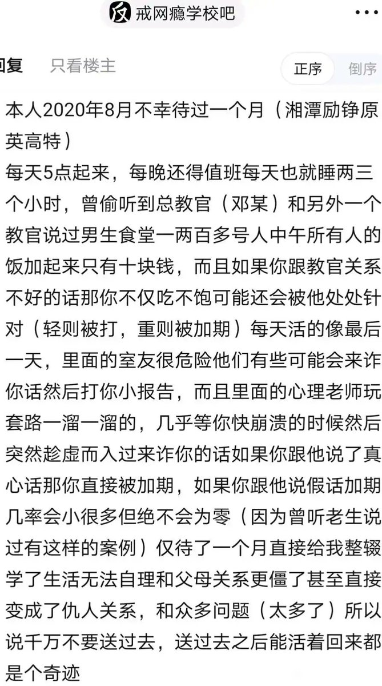

拱北靠北
@psyofsouthwest
RT @emiliadayisuki: 李錚集團的“心理老師”會在受害者被“教官”折磨至幾近崩潰之時，
趁虛而入，
趁機套出真話，
忽悠其父母給其加期.
———湖南心勵特訓教育管理集團，前（英高特國際教育集團）（南華英高特）， 現（雅智教育集團，啓德，雅聖思，湘學，聖博，賢德教…

消滅李錚集團
@emiliadayisuki
李錚集團的“心理老師”會在受害者被“教官”折磨至幾近崩潰之時，
趁虛而入，
趁機套出真話，
忽悠其父母給其加期.
———湖南心勵特訓教育管理集團，前（英高特國際教育集團）（南華英高特）， 現（雅智教育集團，啓德，雅聖思，湘學，聖博，賢德教育，湘學浙素，啓智，紐特，山東正心，長沙傑龍教育集團） https://t.co/VAAfbtDyYw